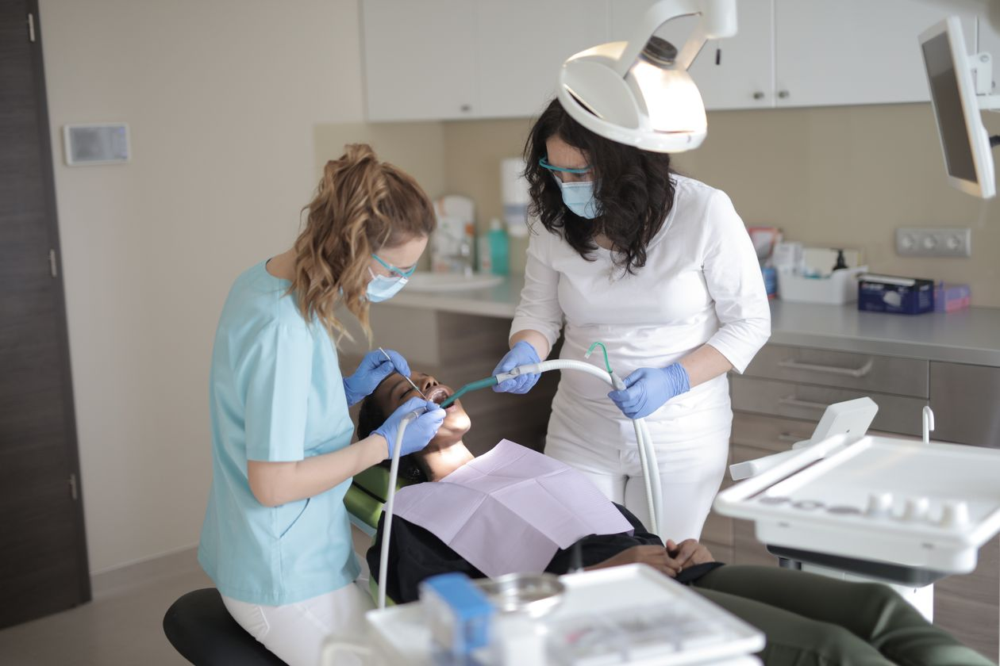
ایمپلنت دندان
جایگزینی دندانهای از دسترفته با ایمپلنت؛ با تکیه بر سلامت لثه و استخوان، تا نتیجهای پایدار و طبیعی به دست بیاید.
درمانهای تخصصی لثه و ایمپلنت، با بورد تخصصی و نگاه دانشگاهی؛ از درمان بیماریهای لثه تا اصلاح لبخند لثهای و کاشت ایمپلنت — همه زیر نظر مستقیم دکتر پریسان غلامین.
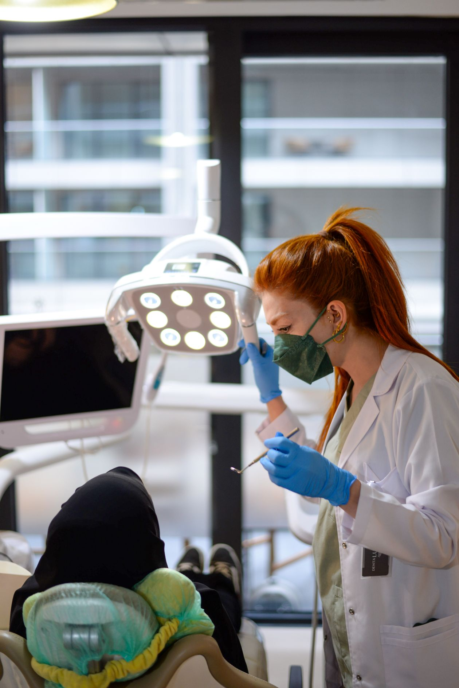
حوزهی تخصصی دکتر غلامین، سلامت لثه و بافتهای نگهدارندهی دندان است؛ جایی که درمان درست، عمر دندانها و نتیجهی ایمپلنت را تعیین میکند.

جایگزینی دندانهای از دسترفته با ایمپلنت؛ با تکیه بر سلامت لثه و استخوان، تا نتیجهای پایدار و طبیعی به دست بیاید.
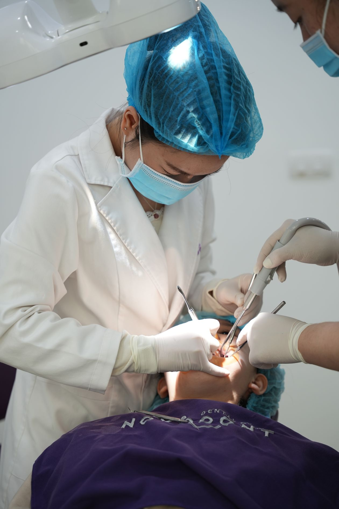
جراحیهای تخصصی پریودنتال برای درمان مشکلات پیشرفتهی لثه و بازگرداندن سلامت بافتهای اطراف دندان.
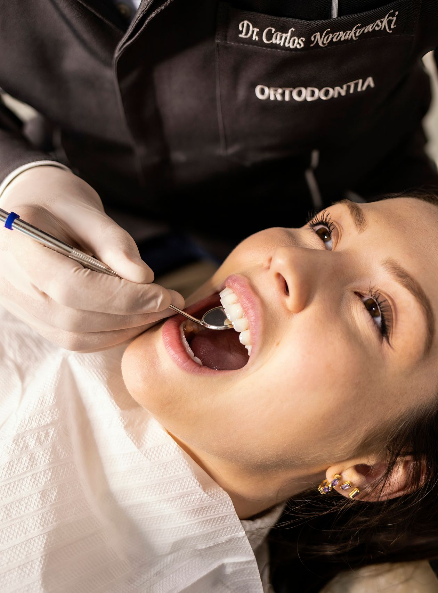
تشخیص و درمان التهاب و عفونت لثه و بیماریهای پریودنتال؛ هرچه زودتر شروع شود، حفظ دندانهای طبیعی سادهتر است.
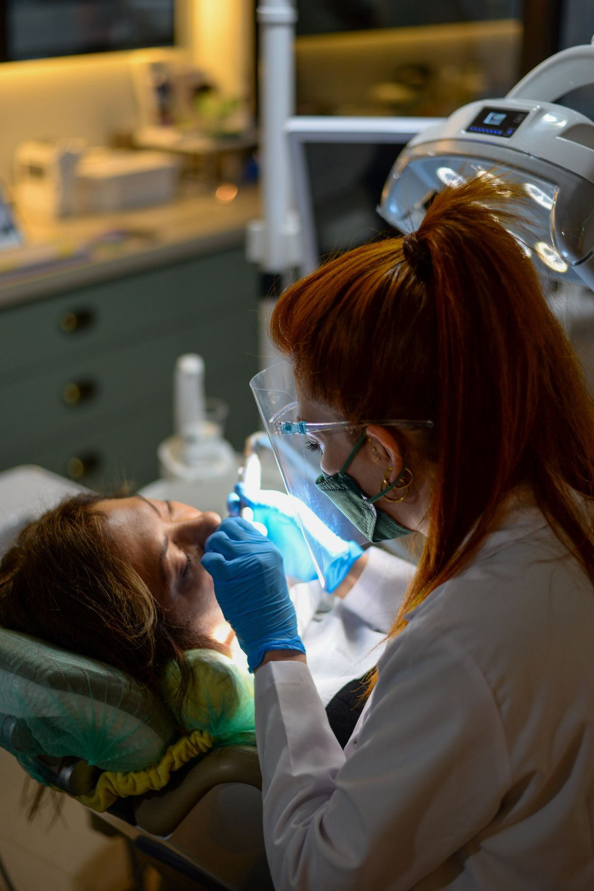
بازسازی بافت از دسترفتهی لثه و پوشش ریشههای نمایانشده؛ برای کاهش حساسیت و برگرداندن ظاهر طبیعی خط لثه.
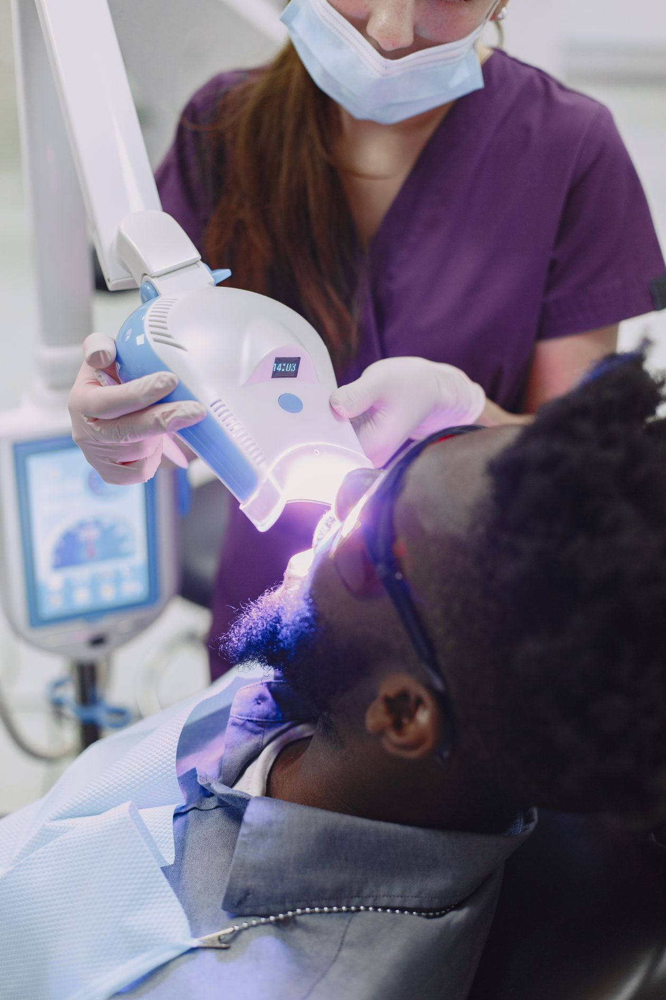
جراحی افزایش طول تاج برای آمادهسازی دندان برای ترمیم و روکش، یا همسطحکردن خط لثه در طراحی لبخند.
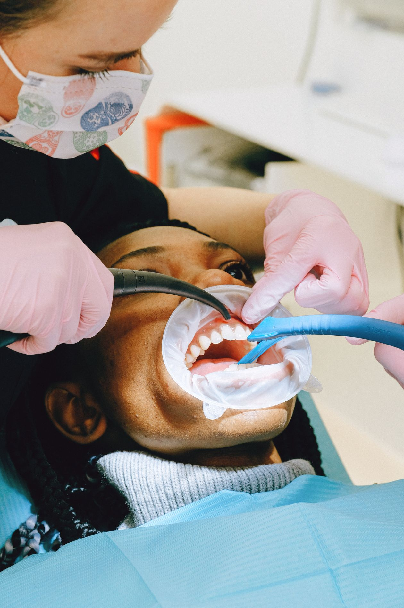
اصلاح لبخندی که در آن لثه بیش از حد دیده میشود؛ با فرمدهی دقیق خط لثه برای لبخندی متناسبتر.
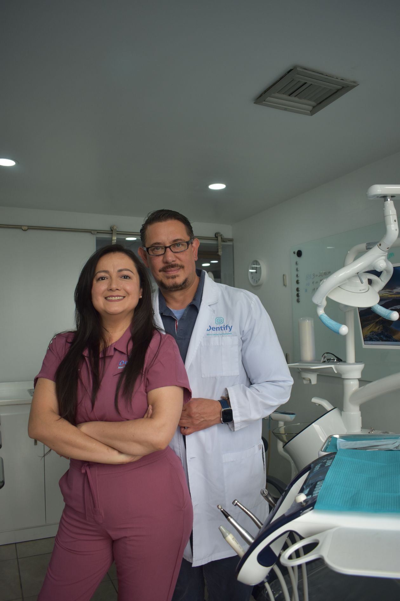
بیماریهای لثه اغلب بیسروصدا شروع میشوند و اگر دیر درمان شوند، به لقشدن و از دسترفتن دندان میرسند. درمان این حوزه وقتی به متخصص جراحی لثه سپرده شود، هم دقیقتر است و هم ماندگارتر.
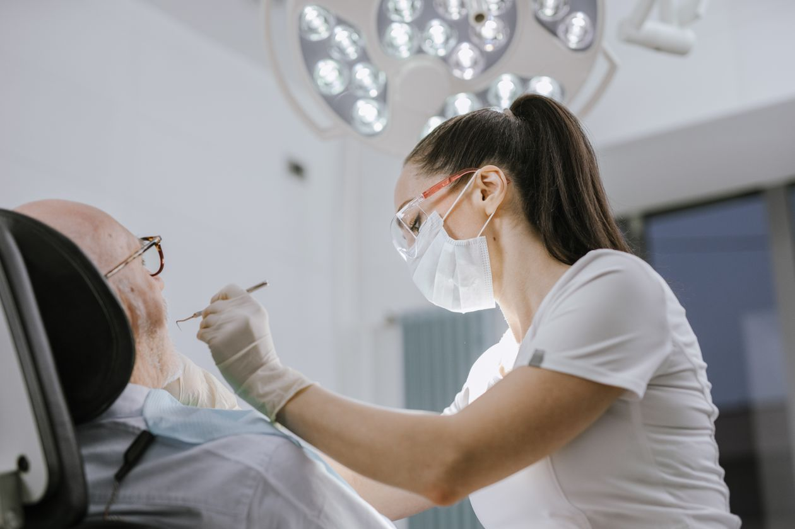
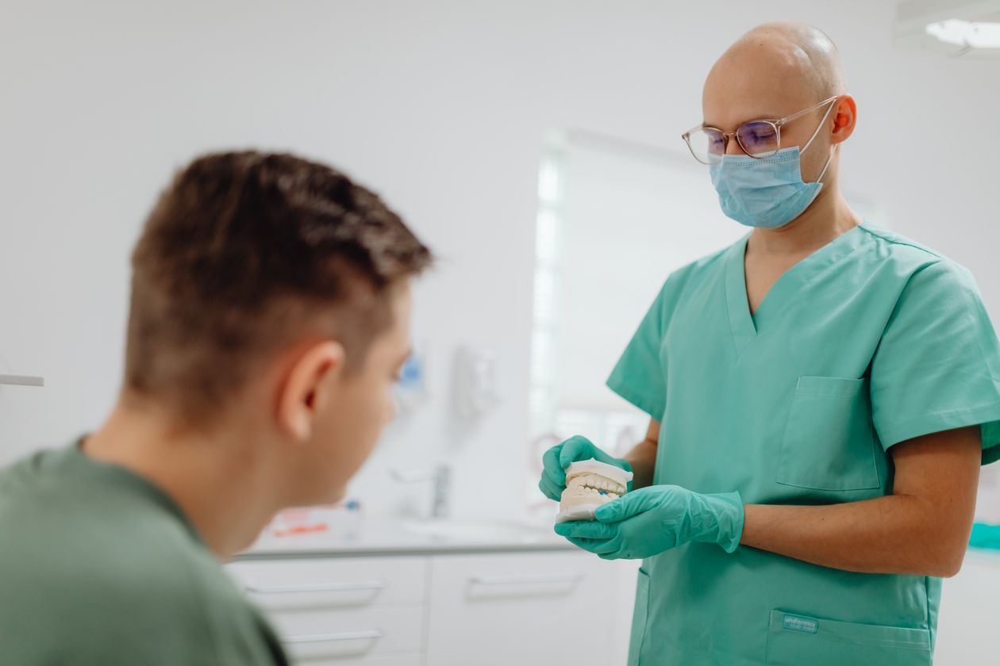
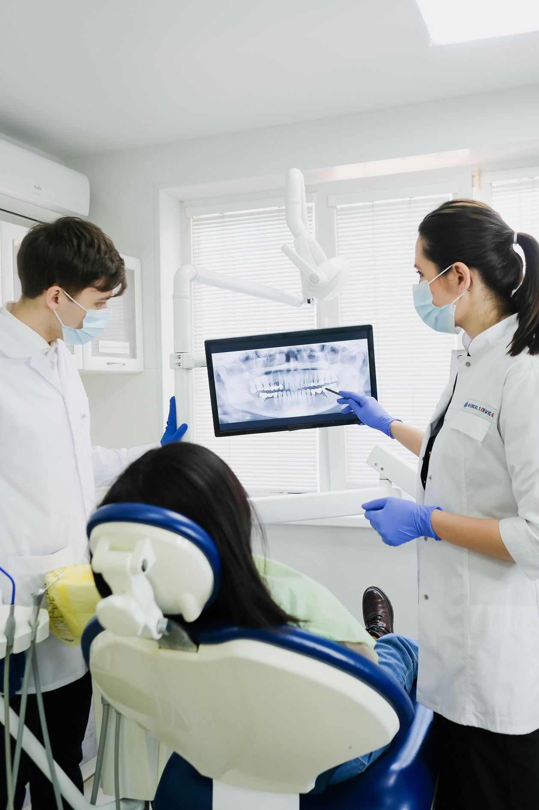
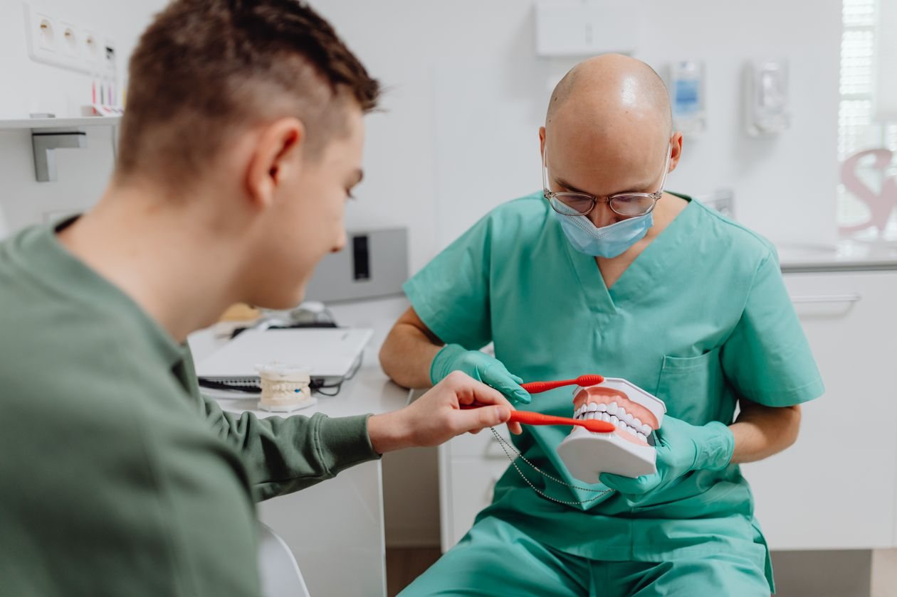
بررسی کامل وضعیت لثه، عمق پاکتها و سلامت بافتهای نگهدارندهی دندان در اولین جلسه.
با کمک رادیوگرافی، طرح درمان دقیق و مرحلهبندیشده برایتان توضیح داده میشود.
درمان غیرجراحی یا جراحی تخصصی، بسته به شرایط لثه و دندانهای شما انجام میشود.
ویزیتهای دورهای و آموزش مراقبت خانگی؛ چون ماندگاری نتیجهی درمان لثه به نگهداری درست وابسته است.
خونریزی هنگام مسواک یا نخ دندان، تورم و قرمزی لثه، بوی بد دهانِ ماندگار و عقبنشینی لثه از نشانههای رایجاند. بیماری لثه در مراحل اول معمولاً دردناک نیست؛ برای همین معاینهی دورهای توسط متخصص لثه مهم است.
بله، در بیشتر موارد. ایمپلنتی که در بستر لثه و استخوانِ سالم قرار بگیرد، ماندگاری بسیار بیشتری دارد. اگر بیماری لثه فعال باشد، اول باید درمان شود و بعد کاشت ایمپلنت انجام شود.
اگر هنگام لبخند بخش زیادی از لثه دیده میشود، با جراحی لیفت لثه و افزایش طول تاج میتوان خط لثه را همسطح و متناسب کرد. روش دقیق بعد از معاینه و بررسی نسبت دندان و لثه مشخص میشود.
در روزهای اول غذای نرم و خنک، پرهیز از مسواکزدن مستقیم روی ناحیهی جراحی و استفاده از دهانشویهی تجویزشده توصیه میشود. دستور دقیق مراقبت بعد از هر جراحی در مطب بهصورت کامل به شما داده میشود.
برای رزرو نوبت معاینه یا پرسیدن سؤال دربارهی درمان لثه و ایمپلنت، در واتساپ پیام بدهید یا تماس بگیرید.